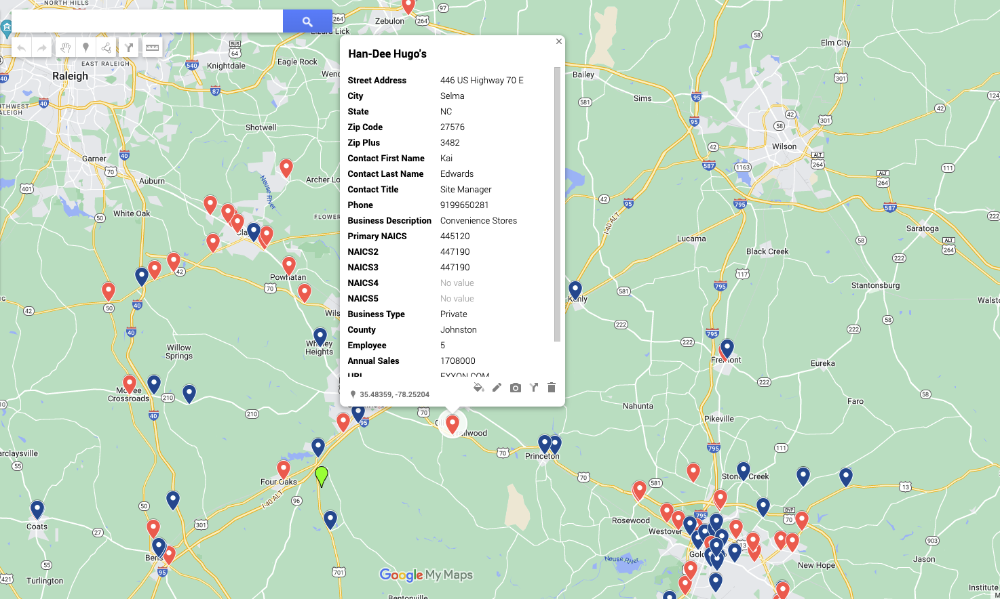

Using machine learning and web scraping to find the right locations for convenience stores in North Carolina.
View the companion code on GitHub.
I don’t need to repeat location three times to stress how important it is to the success of a business. We see its effect all the time — that one shopping center, with the awkward left turn, that seems to host a different set of stores every year, or we’ve had the misfortune of eating at that packed waterfront restaurant with five-star prices and one-star entrees. Location can make or break your business.
Even though we intuitively know location’s importance, there is a lack of tools for finding that perfect location, so I decided to devise my own method. Here, we will use that method to research the best locations to open a convenience store in North Carolina.
The Method
- Find the best counties to open a convenience store.
- Collect data about the convenience stores in those counties
- Map those stores out to find what locations are most profitable.
Step One: Find the counties
To find the best counties to open a convenience store, we’re going to have to make some assumptions about what factors will help our business. We are going to choose counties with a low ratio of convenience stores to population and with a relatively high average income. To do this, we are going to use a machine learning technique called hierarchical clustering.
What is Clustering?
Clustering is a statistical technique for grouping similar data together. In our case, we are using clustering to group counties based on population, the number of convenience stores, and average income. Then, we will pick the cluster of counties that best matches our assumptions for choosing a location.
Based on our clustering model, we will focus our research on the following counties:
- Alamance
- Brunswick
- Buncombe
- Cabarrus
- Catawba
- Davidson
- Gaston
- Harnett
- Iredell
- Johnston
- New Hanover
- Onslow
- Pitt
- Randolph
- Robeson
- Rowan
- Union
- Wayne

Step Two: Gather the Convenience Store Data
Now that we have the counties that are best for our convenience store, we can research the convenience stores that are already there to help make our decision. Luckily, the NC Department of Commerce website has a data tool that provides information about businesses by county. To quickly collect this data, I made a Selenium bot to web scrape the data from the website (you can view the code on GitHub).
Check out the video below to watch the scraper in action.
With the data collected, it is important to separate the large chain convenience stores from the independent owner-operators to view their average annual sales. Large chains typically can pull customers from smaller operations, so it's important to compare the average annual sales in each county.

Step 3: Mapping Out the Locations
Using our data collected from the NC Department of Commerce, we can map those locations on Google Maps. Now we can see the locations of the large chains (red markers) and small stores (blue markers). We can also see what each store’s annual sales are to better inform our decision.
We know from the bar graph above that independent convenience stores make more money on average in Johnston County. We can use our map to zoom in on the convenience stores in the area and click on the markers to find more information.
. . . And that's our method for helping you pick the right location for your business!
∎